Last updated: 2026-04-01
Checks: 7 0
Knit directory:
paediatric-cf-inflammation-citeseq/
This reproducible R Markdown analysis was created with workflowr (version 1.7.1). The Checks tab describes the reproducibility checks that were applied when the results were created. The Past versions tab lists the development history.
Great! Since the R Markdown file has been committed to the Git repository, you know the exact version of the code that produced these results.
Great job! The global environment was empty. Objects defined in the global environment can affect the analysis in your R Markdown file in unknown ways. For reproduciblity it’s best to always run the code in an empty environment.
The command set.seed(20240216) was run prior to running
the code in the R Markdown file. Setting a seed ensures that any results
that rely on randomness, e.g. subsampling or permutations, are
reproducible.
Great job! Recording the operating system, R version, and package versions is critical for reproducibility.
Nice! There were no cached chunks for this analysis, so you can be confident that you successfully produced the results during this run.
Great job! Using relative paths to the files within your workflowr project makes it easier to run your code on other machines.
Great! You are using Git for version control. Tracking code development and connecting the code version to the results is critical for reproducibility.
The results in this page were generated with repository version 48b6fc4. See the Past versions tab to see a history of the changes made to the R Markdown and HTML files.
Note that you need to be careful to ensure that all relevant files for
the analysis have been committed to Git prior to generating the results
(you can use wflow_publish or
wflow_git_commit). workflowr only checks the R Markdown
file, but you know if there are other scripts or data files that it
depends on. Below is the status of the Git repository when the results
were generated:
Ignored files:
Ignored: .Rhistory
Ignored: .Rproj.user/
Ignored: analysis/.DS_Store
Ignored: analysis/obsolete/
Ignored: code/obsolete/
Ignored: data/.DS_Store
Ignored: data/C133_Neeland_batch0/
Ignored: data/C133_Neeland_batch1/
Ignored: data/C133_Neeland_batch2/
Ignored: data/C133_Neeland_batch3/
Ignored: data/C133_Neeland_batch4/
Ignored: data/C133_Neeland_batch5/
Ignored: data/C133_Neeland_batch6/
Ignored: data/C133_Neeland_merged/
Ignored: data/Neeland_processed_data_1.h5ad
Ignored: data/Neeland_processed_data_2.h5ad
Ignored: data/Neeland_processed_data_3.h5ad
Ignored: data/intermediate_objects/.DS_Store
Ignored: data/updated_h5ad_files/
Ignored: output/.DS_Store
Ignored: renv/library/
Ignored: renv/staging/
Untracked files:
Untracked: analysis/cellxgene_submission.Rmd
Untracked: data/GOBP_CYTOKINE_MEDIATED_SIGNALING_PATHWAY.v2025.1.Hs.tsv
Untracked: data/cellxgene_cell_ontologies_ann_level_3.xlsx
Untracked: data/gencode.v44.primary_assembly.annotation.gtf
Unstaged changes:
Modified: .DS_Store
Modified: .gitignore
Modified: README.md
Modified: analysis/13.0_DGE_analysis_macrophages.Rmd
Modified: analysis/13.1_DGE_analysis_macro-alveolar.Rmd
Modified: analysis/13.2_DGE_analysis_macro-APOC2+.Rmd
Modified: analysis/13.3_DGE_analysis_macro-CCL.Rmd
Modified: analysis/13.4_DGE_analysis_macro-IFI27.Rmd
Modified: analysis/13.5_DGE_analysis_macro-lipid.Rmd
Modified: analysis/13.6_DGE_analysis_macro-monocyte-derived.Rmd
Modified: analysis/13.7_DGE_analysis_macro-proliferating.Rmd
Modified: analysis/14.0_DGE_analysis_CD4-T-cells.Rmd
Modified: analysis/14.1_DGE_analysis_CD8-T-cells.Rmd
Modified: analysis/14.2_DGE_analysis_DC-cells.Rmd
Modified: analysis/15.0_proportions_analysis_ann_level_1.Rmd
Modified: analysis/15.1_proportions_analysis_ann_level_3_non-macrophages.Rmd
Modified: analysis/15.2_proportions_analysis_ann_level_3_macrophages.Rmd
Modified: analysis/16.0_Figure_1.Rmd
Modified: analysis/16.1_Figure_2.Rmd
Modified: analysis/16.2_Figure_3.Rmd
Modified: analysis/16.3_Figure_4.Rmd
Modified: analysis/16.4_Figure_5.Rmd
Modified: analysis/16.5_Figure_6.Rmd
Modified: analysis/getting_started.Rmd
Deleted: output/Figure1A.jpeg
Modified: output/Figure1A.png
Modified: output/dge_analysis/macrophages/CAM.FIBROSIS.CF.IVAvCF.NO_MOD.csv
Modified: output/dge_analysis/macrophages/CAM.FIBROSIS.CF.IVAvNON_CF.CTRL.csv
Modified: output/dge_analysis/macrophages/CAM.FIBROSIS.CF.LUMA_IVAvCF.NO_MOD.csv
Modified: output/dge_analysis/macrophages/CAM.FIBROSIS.CF.NO_MOD.SvCF.NO_MOD.M.csv
Modified: output/dge_analysis/macrophages/CAM.FIBROSIS.CF.NO_MODvNON_CF.CTRL.csv
Modified: output/dge_analysis/macrophages/CAM.GO.CF.IVAvCF.NO_MOD.csv
Modified: output/dge_analysis/macrophages/CAM.GO.CF.IVAvNON_CF.CTRL.csv
Modified: output/dge_analysis/macrophages/CAM.GO.CF.LUMA_IVAvCF.NO_MOD.csv
Modified: output/dge_analysis/macrophages/CAM.GO.CF.NO_MOD.SvCF.NO_MOD.M.csv
Modified: output/dge_analysis/macrophages/CAM.GO.CF.NO_MODvNON_CF.CTRL.csv
Modified: output/dge_analysis/macrophages/CAM.HALLMARK.CF.IVAvCF.NO_MOD.csv
Modified: output/dge_analysis/macrophages/CAM.HALLMARK.CF.IVAvNON_CF.CTRL.csv
Modified: output/dge_analysis/macrophages/CAM.HALLMARK.CF.LUMA_IVAvCF.NO_MOD.csv
Modified: output/dge_analysis/macrophages/CAM.HALLMARK.CF.NO_MOD.SvCF.NO_MOD.M.csv
Modified: output/dge_analysis/macrophages/CAM.HALLMARK.CF.NO_MODvNON_CF.CTRL.csv
Modified: output/dge_analysis/macrophages/CAM.REACTOME.CF.IVAvCF.NO_MOD.csv
Modified: output/dge_analysis/macrophages/CAM.REACTOME.CF.IVAvNON_CF.CTRL.csv
Modified: output/dge_analysis/macrophages/CAM.REACTOME.CF.LUMA_IVAvCF.NO_MOD.csv
Modified: output/dge_analysis/macrophages/CAM.REACTOME.CF.NO_MOD.SvCF.NO_MOD.M.csv
Modified: output/dge_analysis/macrophages/CAM.REACTOME.CF.NO_MODvNON_CF.CTRL.csv
Modified: output/dge_analysis/macrophages/CAM.WP.CF.IVAvCF.NO_MOD.csv
Modified: output/dge_analysis/macrophages/CAM.WP.CF.IVAvNON_CF.CTRL.csv
Modified: output/dge_analysis/macrophages/CAM.WP.CF.LUMA_IVAvCF.NO_MOD.csv
Modified: output/dge_analysis/macrophages/CAM.WP.CF.NO_MOD.SvCF.NO_MOD.M.csv
Modified: output/dge_analysis/macrophages/CAM.WP.CF.NO_MODvNON_CF.CTRL.csv
Modified: output/dge_analysis/macrophages/CF.IVAvCF.NO_MOD.csv
Modified: output/dge_analysis/macrophages/CF.IVAvNON_CF.CTRL.csv
Modified: output/dge_analysis/macrophages/CF.LUMA_IVAvCF.NO_MOD.csv
Modified: output/dge_analysis/macrophages/CF.NO_MOD.SvCF.NO_MOD.M.csv
Modified: output/dge_analysis/macrophages/CF.NO_MODvNON_CF.CTRL.csv
Modified: output/dge_analysis/macrophages/ORA.GO.CF.IVAvNON_CF.CTRL.csv
Modified: output/dge_analysis/macrophages/ORA.GO.CF.NO_MOD.SvCF.NO_MOD.M.csv
Modified: output/dge_analysis/macrophages/ORA.GO.CF.NO_MODvNON_CF.CTRL.csv
Modified: output/dge_analysis/macrophages/ORA.HALLMARK.CF.IVAvCF.NO_MOD.csv
Modified: output/dge_analysis/macrophages/ORA.REACTOME.CF.NO_MODvNON_CF.CTRL.csv
Modified: output/pdf_figures/Figure_1.pdf
Modified: output/pdf_figures/Figure_4.pdf
Modified: output/pdf_figures/Figure_5.pdf
Modified: output/pdf_figures/Figure_6.pdf
Note that any generated files, e.g. HTML, png, CSS, etc., are not included in this status report because it is ok for generated content to have uncommitted changes.
These are the previous versions of the repository in which changes were
made to the R Markdown
(analysis/14.3_epithelial_cell_analysis.Rmd) and HTML
(docs/14.3_epithelial_cell_analysis.html) files. If you’ve
configured a remote Git repository (see ?wflow_git_remote),
click on the hyperlinks in the table below to view the files as they
were in that past version.
| File | Version | Author | Date | Message |
|---|---|---|---|---|
| Rmd | 48b6fc4 | Jovana Maksimovic | 2026-04-01 | wflow_publish(c("analysis/14.3_epithelial_cell_analysis.Rmd", |
files <- here("data",
"C133_Neeland_merged",
"C133_Neeland_full_clean_decontx_other_cells_annotated_full.SEU.rds")
seu <- readRDS(files)
seuAn object of class Seurat
41892 features across 13687 samples within 5 assays
Active assay: RNA (19973 features, 0 variable features)
4 other assays present: ADT, SCT, integrated, ADT.dsb
2 dimensional reductions calculated: pca, umapDimPlot(seu, group.by = "ann_level_2")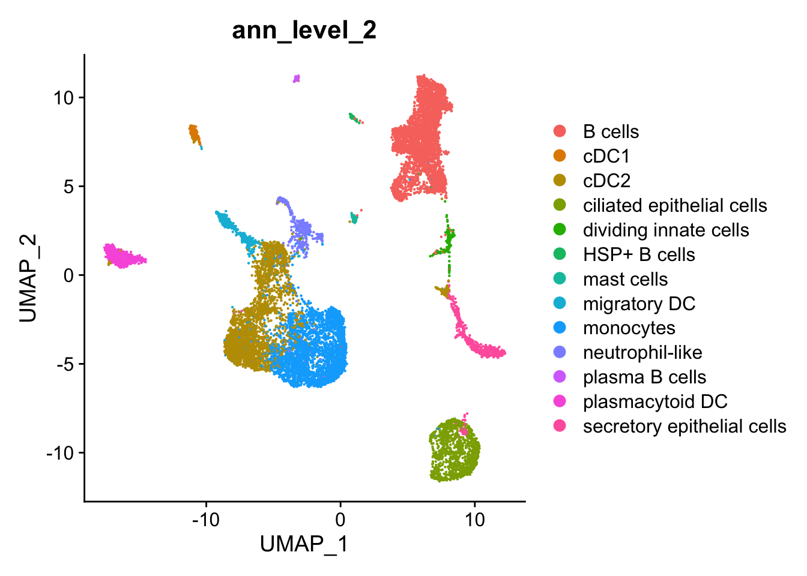
samp_map <-
c(
"CF.IVA" = "CF (iva)",
"CF.LUMA_IVA" = "CF (luma/iva)",
"CF.NO_MOD" = "CF (no mod)",
"NON_CF.CTRL" = "Non-CF control"
)
seu <- NormalizeData(seu)
# Step 1: Get expression of CFTR and cell type metadata
cftr_expr <- FetchData(seu, vars = c("CFTR"))
cftr_expr$cell_type <- seu$ann_level_2 # replace with your actual column name
cftr_expr$disease <- seu$Group
cftr_expr <- cftr_expr %>%
dplyr::filter(str_detect(cell_type, "epithelial")) %>%
mutate(Group = samp_map[disease])
# Step 2: Calculate the percentage of expressing cells per cell type
cftr_percent_by_type <- cftr_expr %>%
group_by(cell_type, Group) %>%
summarise(
total_cells = n(),
percent_expressing = 100 * sum(CFTR > 0) / n(),
.groups = "drop"
)
# Step 3: View the result
print(cftr_percent_by_type)# A tibble: 8 × 4
cell_type Group total_cells percent_expressing
<fct> <chr> <int> <dbl>
1 ciliated epithelial cells CF (iva) 168 0.595
2 ciliated epithelial cells CF (luma/iva) 57 1.75
3 ciliated epithelial cells CF (no mod) 589 0.509
4 ciliated epithelial cells Non-CF control 432 0.463
5 secretory epithelial cells CF (iva) 133 6.02
6 secretory epithelial cells CF (luma/iva) 16 12.5
7 secretory epithelial cells CF (no mod) 284 8.10
8 secretory epithelial cells Non-CF control 168 9.52 #Assuming 'cftr_percent_by_type' is the result from previous code
ggplot(cftr_percent_by_type, aes(x = Group,
y = percent_expressing,
fill = cell_type)) +
geom_bar(stat = "identity", position = position_dodge(width = 0.9)) +
geom_text(aes(label = paste0(round(percent_expressing, 1), "%")),
position = position_dodge(width = 0.9),
vjust = -0.3, size = 3) +
labs(title = "Percentage of Cells Expressing CFTR by Cell Type",
x = "Cell Type",
y = "Percent Expressing CFTR") +
theme_bw()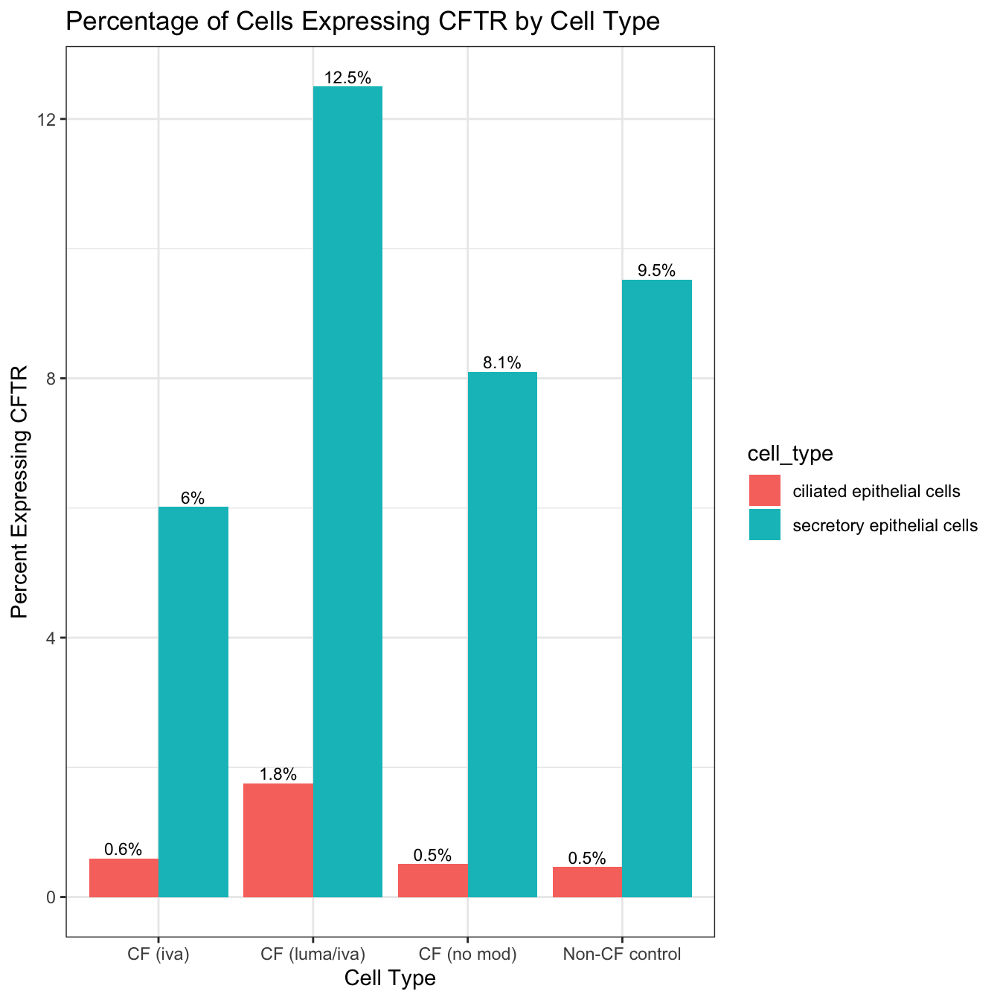
ggplot(cftr_percent_by_type, aes(x = Group,
y = percent_expressing,
fill = cell_type)) +
geom_bar(stat = "identity") +
geom_text(aes(label = paste0(round(percent_expressing, 1), "% (n=", total_cells, ")")),
position = position_stack(vjust = 0.5),
size = 3) +
labs(x = "Condition",
y = "% Cells Expressing CFTR",
fill = "Cell type") +
theme_minimal() -> percent_cftr
percent_cftr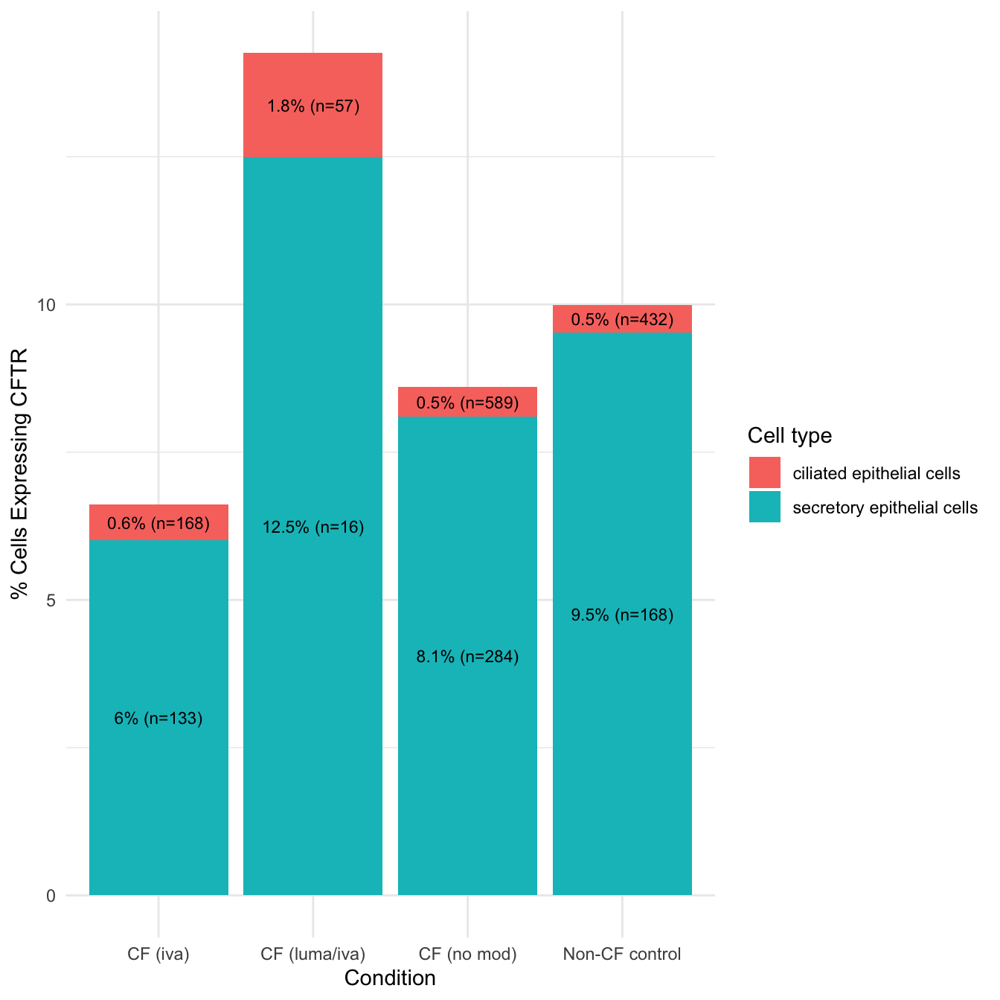
cftr_expr %>%
filter(str_detect(cell_type, "epithelial"),
CFTR != 0) %>%
ggplot(aes(x = cell_type, y = CFTR, color = Group)) +
geom_boxplot(outlier.shape = NA,
position = position_dodge(width = 0.8),
fill = NA) +
geom_jitter(position = position_jitterdodge(jitter.width = 0.1,
dodge.width = 0.8),
size = 1, alpha = 0.6) +
labs(x = "Cell Type", y = "CFTR Expression",
colour = "Condition") +
theme_minimal() +
scale_colour_paletteer_d("RColorBrewer::Set2", direction = 1) -> cftr_exp_plot
cftr_exp_plot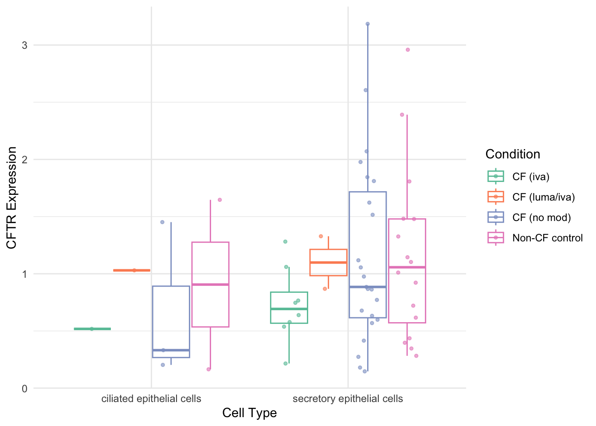
Test genes previously identified as differentially expressed bewteen CF and CO in epithelial cells by Sun and Zhou, 2025 and Carraro et al., 2021
carraro_ciliated <- data.frame(
Ciliated1_CO = c("FTL", "FTH1", "HSPB1", "NUDT14", "ARL6IP4", "CHCHD10", NA, NA, NA, NA),
Ciliated1_CF = c("DNAH5", "ABCA13", "PCM1", "SYNE1", "SYNE2", "SPEF2", "ANKRD26", "HYDIN", "CEP290", "DMD"),
Ciliated2_CO = c("PRDX1", "NQO1", "EPHX1", "TXN", "AKR1C3", "TALDO1", "ALDH3A1", "PSMB3", "DEGS2", "TUFM"),
Ciliated2_CF = c("AGR3", "LRRC6", "CTSS", "TSPAN19", "IPO11", "SMARCA5", "LTZFL1", "ENKUR", "MAP3K19", "SCGB2A1"),
Ciliated3_CO = c("EEF1D", "GAPDH", "DUSP23", "MGST1", "KRT19", "EEF1B2", "NACA", "ENO1", "BPIFB1", "PIP"),
Ciliated3_CF = c("SLC34A2", "HLA-DRB1", "CP", "GBP1", "HLA-DPA1", "PIGR", "CFH", "IFI6", NA, NA),
stringsAsFactors = FALSE
) %>%
pivot_longer(cols = everything(), names_to = "subtype", values_to = "gene") %>%
filter(!is.na(gene)) %>%
separate(subtype, into = c("group", "condition"), sep = "_")
carraro_secretory <- data.frame(
Secretory1_CF = c("FOS", "CXCL6", "DDIT4", "TNFAIP2", "SLC34A2", "TRIB1", "EGR1", "ATF3", "IFI27", "PPP1R15A", NA),
Secretory1_CO = c("S100A8", "S100A2", "LY6D", "SERPINB4", "KRT6A", "GPX2", "TXN", "CSTA", "ALDH3A1", NA, NA),
Secretory2_CF = c("MSMB", "BPIFA1", "TFF3", "BPIFB1", "C3", "HLA-DRA", "CD74", "SCL5A8", "DSP", NA, NA),
Secretory2_CO = c("S100A4", "S100A6", "AQP5", "KRT19", "FTL", "HSPB1", "NTS", "ADH1C", "KRT19", "MGST1", "AKR1C1"),
Secretory3_CF = c("DNAH12", "SPEF2", "SPAG17", "SYNE1", "DNAAF1", "DNAH11", "DNAH5", "CCDC146", "ZBBX", "CBR3", NA),
Secretory3_CO = c("LRRFIP1", "RAB13", "HNRNPM", "HMGB1", "YWHAB", "LRRIQ1", NA, NA, NA, NA, NA),
Secretory4_CF = c("DXCR", "TFF1", "GOLM1", "TCN1", "AZGP1", "ANG", "AGR3", "CPE", "SLC12A2", NA, NA),
Secretory4_CO = c("FTH1", "NUPR1", "EEF1D", "ADRIF", "ADI1", "OCIAD2", "NDUFA11", NA, NA, NA, NA),
Secretory5_CF = c("PRB3", "PIP", "PRB4", "PRR4", "LTF", "LYZ", "ZG16B", "MIA", NA, NA, NA),
Secretory5_CO = c("DUSP23", "PRELID1", NA, NA, NA, NA, NA, NA, NA, NA, NA),
stringsAsFactors = FALSE
) %>%
pivot_longer(cols = everything(), names_to = "subtype", values_to = "gene") %>%
filter(!is.na(gene)) %>%
separate(subtype, into = c("group", "condition"), sep = "_")
sun_zhou_targets <- c(
"EGR1", "PRDX1", "FTL", "COX6C", "SPRR3",
"SAA1", "SAA2", "S100A6", "S100A2", "FOS",
"ALDH3A1", "TXN", "GPX2", "CSTA", "GSTP1",
"TSPAN8", "GCLC", "DDX17", "FAM3B", "PSCA",
"PTMA", "TNFAIP2", "COX5A"
)DotPlot(subset(seu, cells = which(str_detect(seu$ann_level_3, "secretory"))),
features = sun_zhou_targets,
group.by = "Group",
cols = c("#e0ecf4", "#88419d")) +
theme_minimal() +
labs(
x = "Gene",
y = "Cell type",
title = "Secretory: Sun and Zhou 2025"
) +
theme(
axis.text.x = element_text(angle = 45, hjust = 1, vjust = 1),
plot.title = element_text(hjust = 0.5)
) +
coord_flip()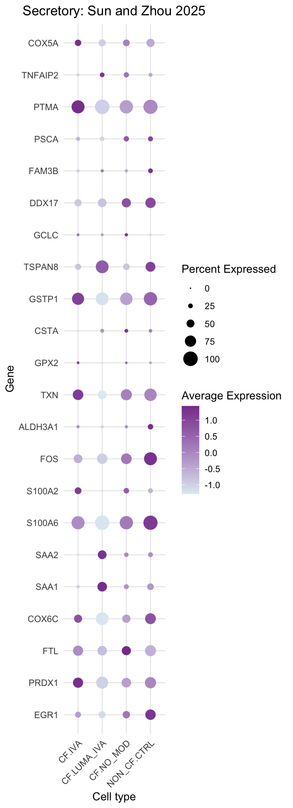
DotPlot(subset(seu, cells = which(str_detect(seu$ann_level_3, "ciliated"))),
features = sun_zhou_targets,
group.by = "Group",
cols = c("#e0ecf4", "#88419d")) +
theme_minimal() +
labs(
x = "Gene",
y = "Cell type",
title = "Ciliated: Sun and Zhou 2025"
) +
theme(
axis.text.x = element_text(angle = 45, hjust = 1, vjust = 1),
plot.title = element_text(hjust = 0.5)
)+
coord_flip()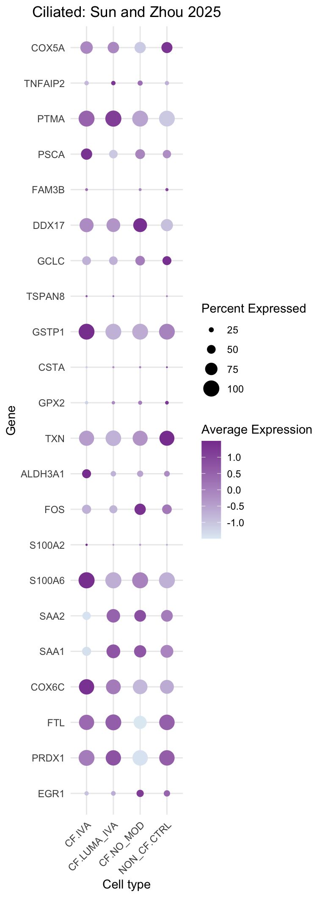
DotPlot(subset(seu, cells = which(str_detect(seu$ann_level_3, "secretory"))),
features = unique(carraro_secretory$gene),
group.by = "Group",
cols = c("#e0ecf4", "#88419d")) +
theme_minimal() +
labs(
x = "Gene",
y = "Cell type",
title = "Secretory: Carraro 2021"
) +
theme(
axis.text.x = element_text(angle = 45, hjust = 1, vjust = 1),
plot.title = element_text(hjust = 0.5)
)+
coord_flip()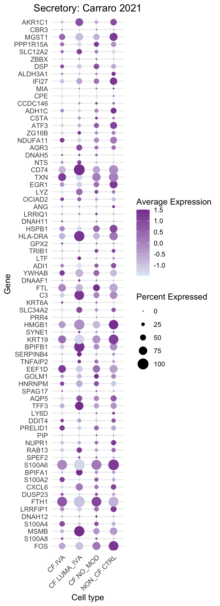
DotPlot(subset(seu, cells = which(str_detect(seu$ann_level_3, "ciliated"))),
features = unique(carraro_ciliated$gene),
group.by = "Group",
cols = c("#e0ecf4", "#88419d")) +
theme_minimal() +
labs(
x = "Gene",
y = "Cell type",
title = "Ciliated: Carraro 2021"
) +
theme(
axis.text.x = element_text(angle = 45, hjust = 1, vjust = 1),
plot.title = element_text(hjust = 0.5)
)+
coord_flip()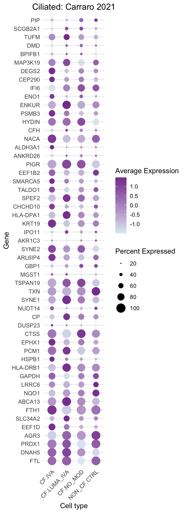
target_genes <- unique(c(sun_zhou_targets,
carraro_ciliated$gene,
carraro_secretory$gene))
logcounts <- normCounts(DGEList(as.matrix(seu[["RNA"]]@counts)),
log = TRUE, prior.count = 0.5)# limma-trend for DE
Idents(seu) <- "Group"
cell_type <- unique(seu$ann_level_3[str_detect(seu$ann_level_3, "ciliated")])
subcounts <- logcounts[rownames(logcounts) %in% target_genes, seu$ann_level_3 %in% cell_type]
clustgrp <- fct_drop(factor(Idents(seu))[seu$ann_level_3 %in% cell_type])
donor <- factor(seu$Participant[seu$ann_level_3 %in% cell_type])
design <- model.matrix(~ 0 + clustgrp + donor)
colnames(design)[1:(length(levels(clustgrp)))] <- levels(clustgrp)
design <- design[,-which(colnames(design) %in% nonEstimable(design))]
mycont <- makeContrasts(CF.IVAvsCF.NO_MOD = CF.IVA - CF.NO_MOD,
COvsCF = NON_CF.CTRL - CF.NO_MOD,
levels = design)
fit <- lmFit(subcounts, design)
fit.cont <- contrasts.fit(fit, contrasts = mycont)
fit.cont <- eBayes(fit.cont, trend = TRUE, robust = TRUE)
fit.cont <- treat(fit.cont, fc=1.2)
dt <- decideTests(fit.cont)
summary(dt) CF.IVAvsCF.NO_MOD COvsCF
Down 4 18
NotSig 114 100
Up 2 2cutoff <- 0.05
coef = 1
top <- rownames(topTreat(fit.cont, p.value = cutoff, num = "Inf",
coef = coef))
top_n <- length(top)
subcounts %>%
data.frame %>%
rownames_to_column(var = "gene") %>%
pivot_longer(-gene, names_to = "cell", values_to = "logexp") %>%
left_join(seu@meta.data %>%
rownames_to_column(var = "cell") %>%
dplyr::select(cell,
Group) %>%
mutate(cell = paste0("X", cell),
cell = gsub("-","\\.", cell))) %>%
filter(gene %in% head(top, n = top_n),
Group %in% names(mycont[,coef][mycont[,coef] != 0])) %>%
mutate(gene = factor(gene, levels = head(top, n = top_n)),
Group = samp_map[Group]) %>%
ggplot(aes(x = Group, y = logexp, colour = Group)) +
geom_jitter(width = 0.2, size = 1, alpha = 0.3, stroke = 0) +
stat_summary(fun = "mean", geom = "point", colour = "black") +
facet_wrap(~ gene, scales = "free_y", ncol = 4) +
theme_bw() +
labs(x = "Condition", y = "Expression (log CPM)") +
theme(strip.text = element_text(size = 10),
axis.text.x = element_text(angle = 45, hjust = 1, vjust = 1)) +
ggtitle(glue("Top {top_n} DEGs for {colnames(mycont)[coef]} in {cell_type}")) -> ciliated_iva
ciliated_iva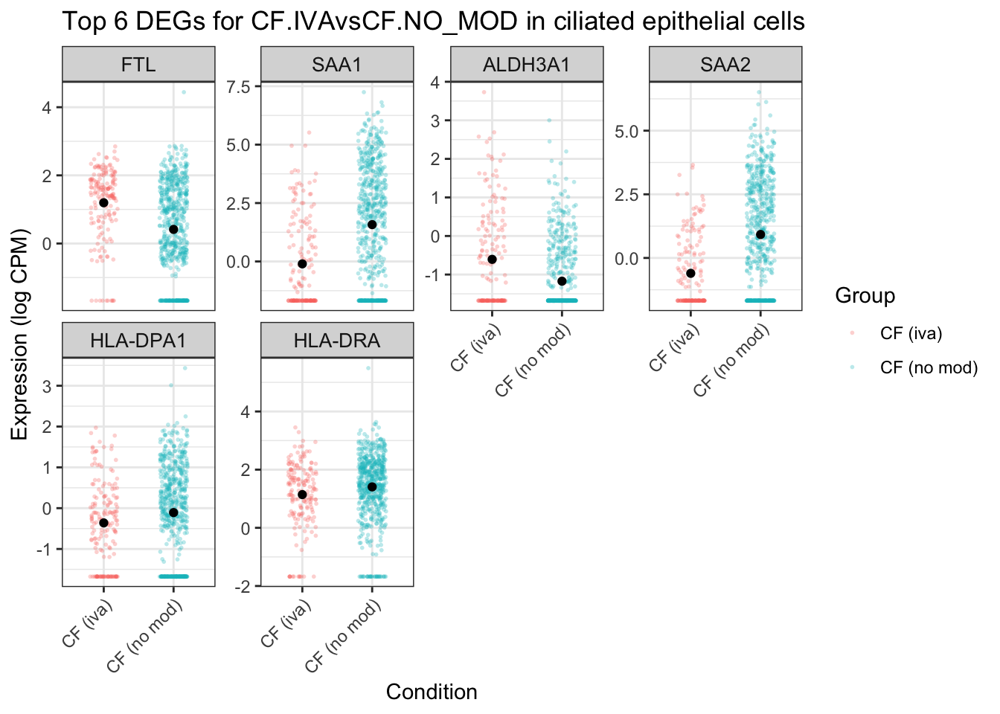
coef = 2
top <- rownames(topTreat(fit.cont, p.value = cutoff, num = "Inf",
coef = coef))
top_n <- length(top)
subcounts %>%
data.frame %>%
rownames_to_column(var = "gene") %>%
pivot_longer(-gene, names_to = "cell", values_to = "logexp") %>%
left_join(seu@meta.data %>%
rownames_to_column(var = "cell") %>%
dplyr::select(cell,
Group) %>%
mutate(cell = paste0("X", cell),
cell = gsub("-","\\.", cell))) %>%
filter(gene %in% head(top, n = top_n),
Group %in% names(mycont[,coef][mycont[,coef] != 0])) %>%
mutate(gene = factor(gene, levels = head(top, n = top_n)),
Group = samp_map[Group]) %>%
ggplot(aes(x = Group, y = logexp, colour = Group)) +
geom_jitter(width = 0.2, size = 1, alpha = 0.3, stroke = 0) +
stat_summary(fun = "mean", geom = "point", colour = "black") +
facet_wrap(~ gene, scales = "free_y", ncol = 5) +
theme_bw() +
labs(x = "Condition", y = "Expression (log CPM)") +
theme(strip.text = element_text(size = 10),
axis.text.x = element_text(angle = 45, hjust = 1, vjust = 1)) +
ggtitle(glue("Top {top_n} DEGs for {colnames(mycont)[coef]} in {cell_type}")) -> ciliated_cf
ciliated_cf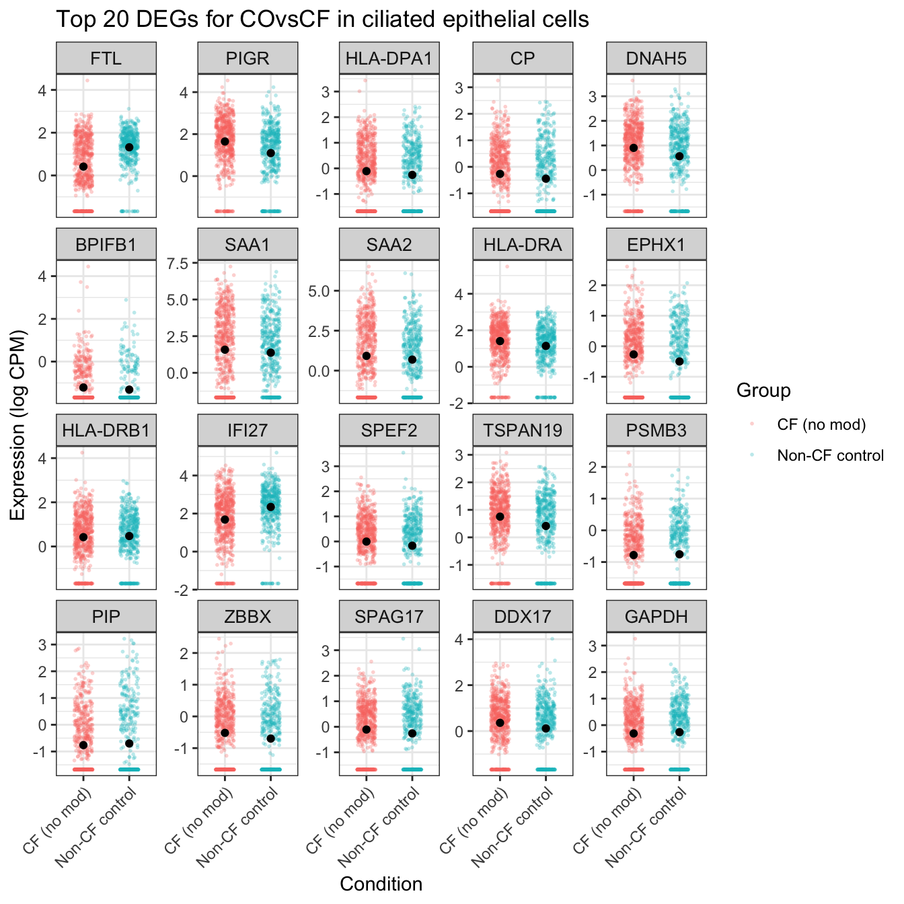
cell_type <- unique(seu$ann_level_3[str_detect(seu$ann_level_3, "secretory")])
subcounts <- logcounts[rownames(logcounts) %in% target_genes, seu$ann_level_3 %in% cell_type]
clustgrp <- fct_drop(factor(Idents(seu))[seu$ann_level_3 %in% cell_type])
donor <- factor(seu$Participant[seu$ann_level_3 %in% cell_type])
design <- model.matrix(~ 0 + clustgrp + donor)
colnames(design)[1:(length(levels(clustgrp)))] <- levels(clustgrp)
design <- design[,-which(colnames(design) %in% nonEstimable(design))]
mycont <- makeContrasts(CF.IVAvsCF.NO_MOD = CF.IVA - CF.NO_MOD,
COvsCF = NON_CF.CTRL - CF.NO_MOD,
levels = design)
fit <- lmFit(subcounts, design)
fit.cont <- contrasts.fit(fit, contrasts = mycont)
fit.cont <- eBayes(fit.cont, trend = TRUE, robust = TRUE)
fit.cont <- treat(fit.cont, fc=1.2)
dt <- decideTests(fit.cont)
summary(dt) CF.IVAvsCF.NO_MOD COvsCF
Down 0 6
NotSig 116 95
Up 4 19coef = 1
top <- rownames(topTreat(fit.cont, p.value = cutoff, num = "Inf",
coef = coef))
top_n <- length(top)
subcounts %>%
data.frame %>%
rownames_to_column(var = "gene") %>%
pivot_longer(-gene, names_to = "cell", values_to = "logexp") %>%
left_join(seu@meta.data %>%
rownames_to_column(var = "cell") %>%
dplyr::select(cell,
Group) %>%
mutate(cell = paste0("X", cell),
cell = gsub("-","\\.", cell))) %>%
filter(gene %in% head(top, n = top_n),
Group %in% names(mycont[,coef][mycont[,coef] != 0])) %>%
mutate(gene = factor(gene, levels = head(top, n = top_n)),
Group = samp_map[Group]) %>%
ggplot(aes(x = Group, y = logexp, colour = Group)) +
geom_jitter(width = 0.2, size = 1, alpha = 0.3, stroke = 0) +
stat_summary(fun = "mean", geom = "point", colour = "black") +
facet_wrap(~ gene, scales = "free_y", ncol = 5) +
theme_bw() +
labs(x = "Condition", y = "Expression (log CPM)") +
theme(strip.text = element_text(size = 10),
axis.text.x = element_text(angle = 45, hjust = 1, vjust = 1)) +
ggtitle(glue("Top {top_n} DEGs for {colnames(mycont)[coef]} in secretory cells")) -> secretory_iva
secretory_iva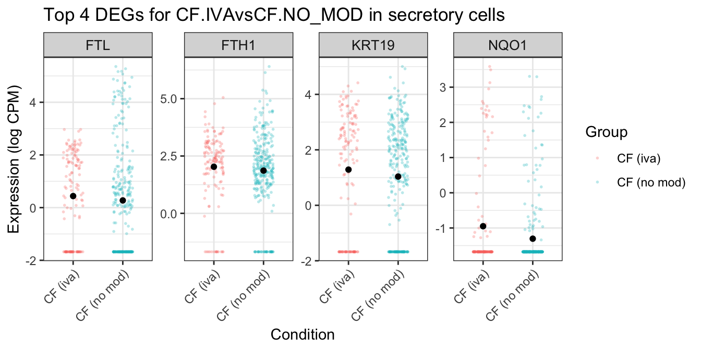
coef = 2
top <- rownames(topTreat(fit.cont, p.value = cutoff, num = "Inf",
coef = coef))
top_n <- length(top)
subcounts %>%
data.frame %>%
rownames_to_column(var = "gene") %>%
pivot_longer(-gene, names_to = "cell", values_to = "logexp") %>%
left_join(seu@meta.data %>%
rownames_to_column(var = "cell") %>%
dplyr::select(cell,
Group) %>%
mutate(cell = paste0("X", cell),
cell = gsub("-","\\.", cell))) %>%
filter(gene %in% head(top, n = top_n),
Group %in% names(mycont[,coef][mycont[,coef] != 0])) %>%
mutate(gene = factor(gene, levels = head(top, n = top_n)),
Group = samp_map[Group]) %>%
ggplot(aes(x = Group, y = logexp, colour = Group)) +
geom_jitter(width = 0.2, size = 1, alpha = 0.3, stroke = 0) +
stat_summary(fun = "mean", geom = "point", colour = "black") +
facet_wrap(~ gene, scales = "free_y", ncol = 5) +
theme_bw() +
labs(x = "Condition", y = "Expression (log CPM)") +
theme(strip.text = element_text(size = 10),
axis.text.x = element_text(angle = 45, hjust = 1, vjust = 1)) +
ggtitle(glue("Top {top_n} DEGs for {colnames(mycont)[coef]} in secretory cells")) -> secretory_cf
secretory_cf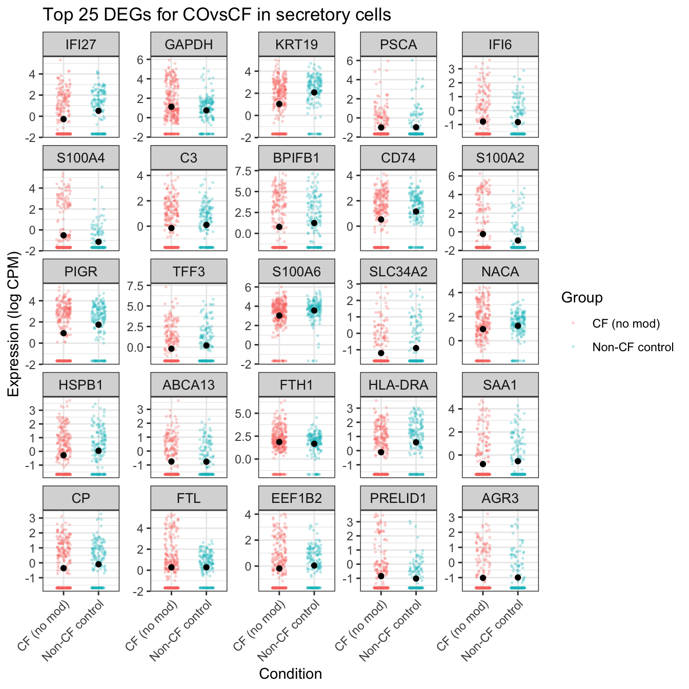
((percent_cftr + theme(plot.margin = margin(rep(0,4)))) /
cftr_exp_plot + theme(plot.margin = margin(rep(0,4)))) +
plot_annotation(tag_levels = "A") &
theme(plot.tag = element_text(size = 24,
face = "bold",
family = "arial"))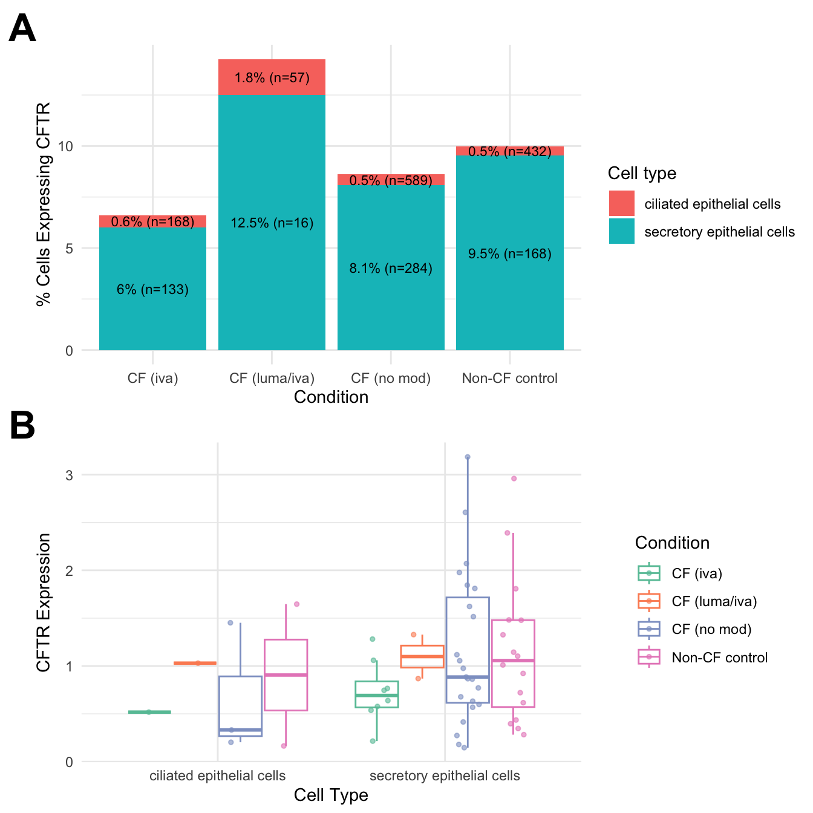
layout <- "
A
A
A
B
B
"
((ciliated_cf + theme(plot.margin = margin(rep(0,4)))) +
ciliated_iva + theme(plot.margin = margin(rep(0,4)))) +
plot_annotation(tag_levels = "A") +
plot_layout(design = layout)&
theme(plot.tag = element_text(size = 24,
face = "bold",
family = "arial"),
legend.position = "none",
plot.title = element_blank())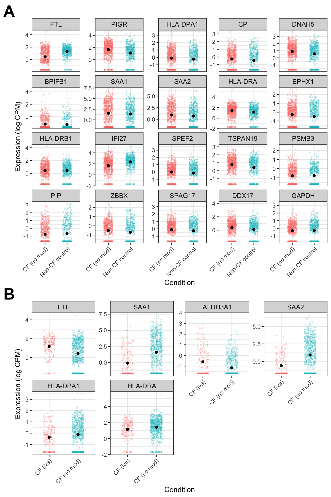
layout <- "
A
A
A
A
B
"
((secretory_cf + theme(plot.margin = margin(rep(0,4)))) +
secretory_iva + theme(plot.margin = margin(rep(0,4)))) +
plot_annotation(tag_levels = "A") +
plot_layout(design = layout)&
theme(plot.tag = element_text(size = 24,
face = "bold",
family = "arial"),
legend.position = "none",
plot.title = element_blank())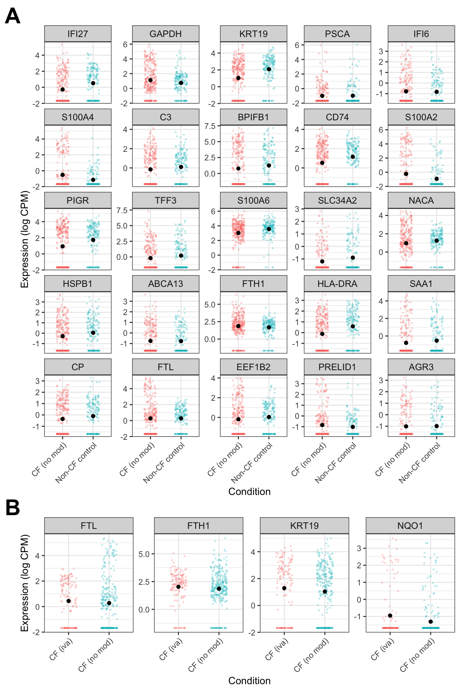
sessionInfo()R version 4.3.3 (2024-02-29)
Platform: aarch64-apple-darwin20 (64-bit)
Running under: macOS 15.5
Matrix products: default
BLAS: /Library/Frameworks/R.framework/Versions/4.3-arm64/Resources/lib/libRblas.0.dylib
LAPACK: /Library/Frameworks/R.framework/Versions/4.3-arm64/Resources/lib/libRlapack.dylib; LAPACK version 3.11.0
locale:
[1] en_US.UTF-8/en_US.UTF-8/en_US.UTF-8/C/en_US.UTF-8/en_US.UTF-8
time zone: Australia/Melbourne
tzcode source: internal
attached base packages:
[1] stats4 stats graphics grDevices datasets utils methods
[8] base
other attached packages:
[1] dsb_1.0.3 ggh4x_0.3.1
[3] speckle_1.2.0 org.Hs.eg.db_3.18.0
[5] AnnotationDbi_1.64.1 readxl_1.4.3
[7] tidyHeatmap_1.8.1 paletteer_1.6.0
[9] patchwork_1.3.1 glue_1.8.0
[11] here_1.0.1 dittoSeq_1.14.2
[13] SeuratObject_4.1.4 Seurat_4.4.0
[15] lubridate_1.9.3 forcats_1.0.0
[17] stringr_1.5.1 dplyr_1.1.4
[19] purrr_1.0.2 readr_2.1.5
[21] tidyr_1.3.1 tibble_3.2.1
[23] ggplot2_3.5.2 tidyverse_2.0.0
[25] edgeR_4.0.15 limma_3.58.1
[27] SingleCellExperiment_1.24.0 SummarizedExperiment_1.32.0
[29] Biobase_2.62.0 GenomicRanges_1.54.1
[31] GenomeInfoDb_1.38.6 IRanges_2.36.0
[33] S4Vectors_0.40.2 BiocGenerics_0.48.1
[35] MatrixGenerics_1.14.0 matrixStats_1.2.0
[37] workflowr_1.7.1
loaded via a namespace (and not attached):
[1] RcppAnnoy_0.0.22 splines_4.3.3 later_1.3.2
[4] prismatic_1.1.1 bitops_1.0-7 cellranger_1.1.0
[7] polyclip_1.10-6 lifecycle_1.0.4 doParallel_1.0.17
[10] rprojroot_2.0.4 globals_0.16.2 processx_3.8.3
[13] lattice_0.22-5 MASS_7.3-60.0.1 dendextend_1.17.1
[16] magrittr_2.0.3 plotly_4.10.4 sass_0.4.10
[19] rmarkdown_2.29 jquerylib_0.1.4 yaml_2.3.8
[22] httpuv_1.6.14 sctransform_0.4.1 sp_2.1-3
[25] spatstat.sparse_3.0-3 reticulate_1.42.0 DBI_1.2.1
[28] cowplot_1.1.3 pbapply_1.7-2 RColorBrewer_1.1-3
[31] abind_1.4-5 zlibbioc_1.48.0 Rtsne_0.17
[34] RCurl_1.98-1.14 git2r_0.33.0 circlize_0.4.15
[37] GenomeInfoDbData_1.2.11 ggrepel_0.9.5 irlba_2.3.5.1
[40] listenv_0.9.1 spatstat.utils_3.0-4 pheatmap_1.0.12
[43] goftest_1.2-3 spatstat.random_3.2-2 fitdistrplus_1.1-11
[46] parallelly_1.37.0 leiden_0.4.3.1 codetools_0.2-19
[49] DelayedArray_0.28.0 shape_1.4.6 tidyselect_1.2.1
[52] farver_2.1.1 viridis_0.6.5 spatstat.explore_3.2-6
[55] jsonlite_1.8.8 GetoptLong_1.0.5 ellipsis_0.3.2
[58] progressr_0.14.0 iterators_1.0.14 ggridges_0.5.6
[61] survival_3.5-8 foreach_1.5.2 tools_4.3.3
[64] ica_1.0-3 Rcpp_1.0.12 gridExtra_2.3
[67] SparseArray_1.2.4 xfun_0.52 withr_3.0.0
[70] BiocManager_1.30.22 fastmap_1.1.1 fansi_1.0.6
[73] callr_3.7.3 digest_0.6.34 timechange_0.3.0
[76] R6_2.5.1 mime_0.12 colorspace_2.1-0
[79] scattermore_1.2 tensor_1.5 RSQLite_2.3.5
[82] spatstat.data_3.0-4 utf8_1.2.4 generics_0.1.3
[85] renv_1.1.4 data.table_1.15.0 httr_1.4.7
[88] htmlwidgets_1.6.4 S4Arrays_1.2.0 whisker_0.4.1
[91] uwot_0.1.16 pkgconfig_2.0.3 gtable_0.3.6
[94] blob_1.2.4 ComplexHeatmap_2.18.0 lmtest_0.9-40
[97] XVector_0.42.0 htmltools_0.5.8.1 clue_0.3-65
[100] scales_1.3.0 png_0.1-8 knitr_1.50
[103] rstudioapi_0.15.0 rjson_0.2.21 tzdb_0.4.0
[106] reshape2_1.4.4 nlme_3.1-164 GlobalOptions_0.1.2
[109] cachem_1.0.8 zoo_1.8-12 KernSmooth_2.23-22
[112] parallel_4.3.3 miniUI_0.1.1.1 pillar_1.9.0
[115] grid_4.3.3 vctrs_0.6.5 RANN_2.6.1
[118] promises_1.2.1 xtable_1.8-4 cluster_2.1.6
[121] evaluate_0.23 cli_3.6.5 locfit_1.5-9.8
[124] compiler_4.3.3 rlang_1.1.6 crayon_1.5.2
[127] future.apply_1.11.1 labeling_0.4.3 mclust_6.1
[130] rematch2_2.1.2 ps_1.7.6 getPass_0.2-4
[133] plyr_1.8.9 fs_1.6.6 stringi_1.8.3
[136] viridisLite_0.4.2 deldir_2.0-2 Biostrings_2.70.2
[139] munsell_0.5.0 lazyeval_0.2.2 spatstat.geom_3.2-8
[142] Matrix_1.6-5 hms_1.1.3 bit64_4.0.5
[145] future_1.33.1 KEGGREST_1.42.0 statmod_1.5.0
[148] shiny_1.8.0 ROCR_1.0-11 memoise_2.0.1
[151] igraph_2.0.1.1 bslib_0.6.1 bit_4.0.5